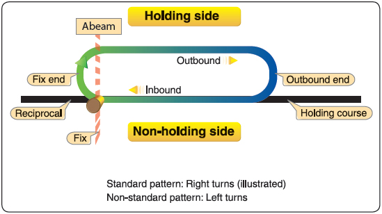

To determine wind direction and apply appropriate corrections
Why/when:
whenever an aircraft is cleared to a fix other than destination airport and delay is expected, holding instruction will be given
poor weather
runway unavailable to land
emergency (completing checklist)
Essential Background Knowledge
types of holding pattern:
course reversal holding pattern
arrival holding pattern to control traffic
missed approach holding pattern
types of holding entry:
Direct entry
Parallel entry
Teardrop(offset) entry
Normal holding pattern is right hand
Inbound leg must be 1min below 14,000’
Inbound leg timing is counted when the wings are level from turning
Outbound leg timing is counted when aircraft is abeam the fix
Holding Clearance
A holding clearance issued by ATC will include at least the following items:
a clearance to the holding fix
the direction to hold from the holding fix
a specified radial, course, or inbound track
if DME is used, the DME distances at which the fix end and outbound end turns are to be commenced
(hold between [number of miles] and [number of miles]). If the outbound DME is not specified by ATC,
pilots are expected adhere to the standard holding pattern timing procedures above
the altitude or FL to be maintained
the time to expect further clearance or an approach clearance or the time to leave the fix in the event of a communications failure
Procedures
Standard holding pattern:

Holding pattern thumb method to find out the entry type:
1st left turn should be the outbound heading after the fix and fly 1 min outbound leg
2nd left turn should be to intercept the inbound radial
Right turn should be performed when the flag changes to “from”
Sector 2 (teardrop entry):
Upon reaching the fix, turn 30˚ towards parallel side and fly 1 min leg on that heading
Upon reaching 1min, turn right to intercept inbound radial
Sector 3 (Direct entry):
Upon reaching the fix, turn right to outbound heading and fly the holding pattern
Wind Correction Procedure
Use GPS to find out ground speed and find out if there is tailwind or headwind
If tailwind on inbound, increase 10 sec on outbound and vice versa (always increment or decrement 10sec to adjust outbound)
If there is crosswind, find out where the wind is coming from, and crab into the wind. And use the heading bug to stay on the new heading
NOTE:
* When a holding instruction is given, first thing a student have to do is find a position from
the station and fly direct to the station (track inbound)
* Then figure out the holding pattern (entry type)